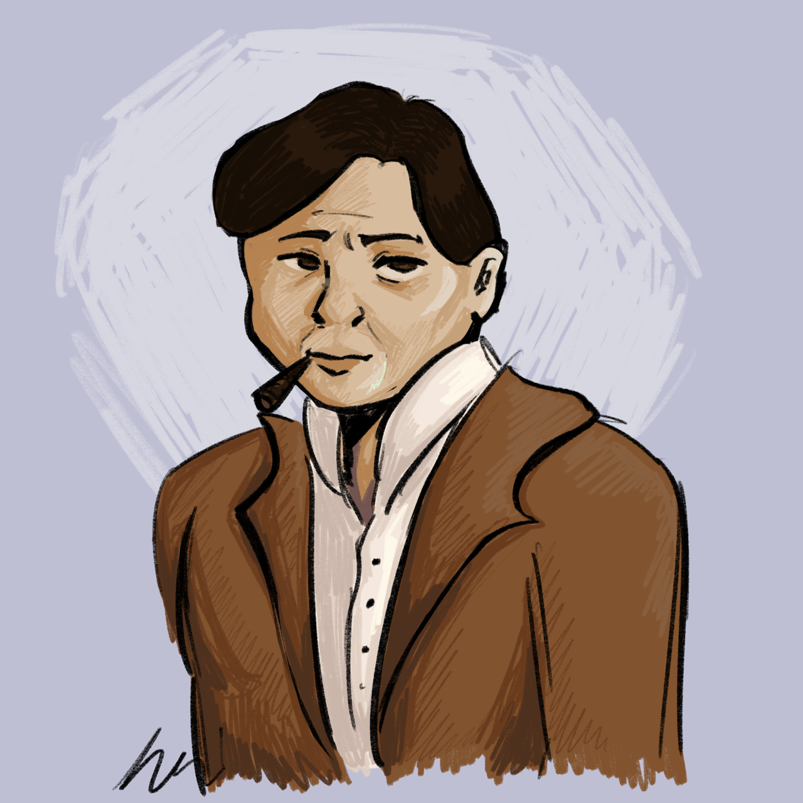
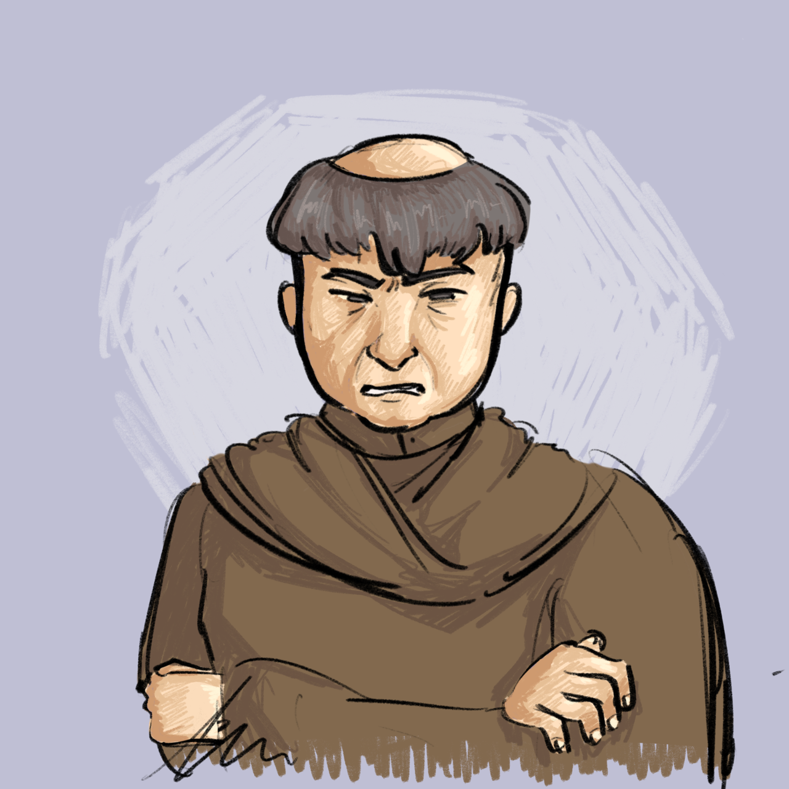
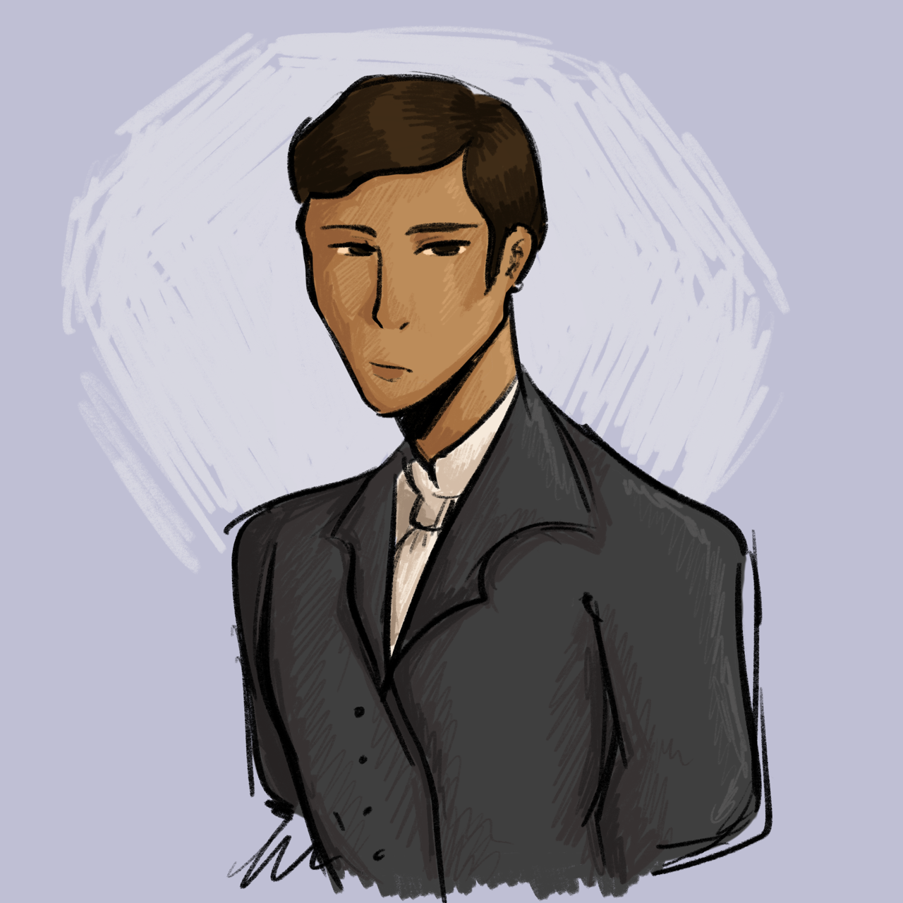
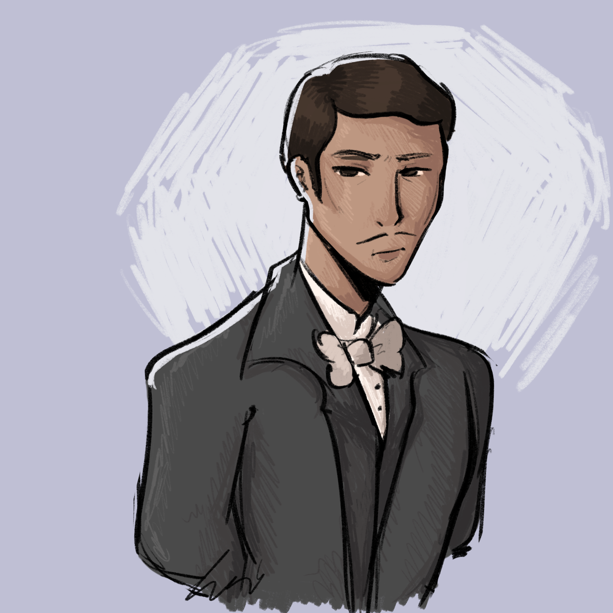
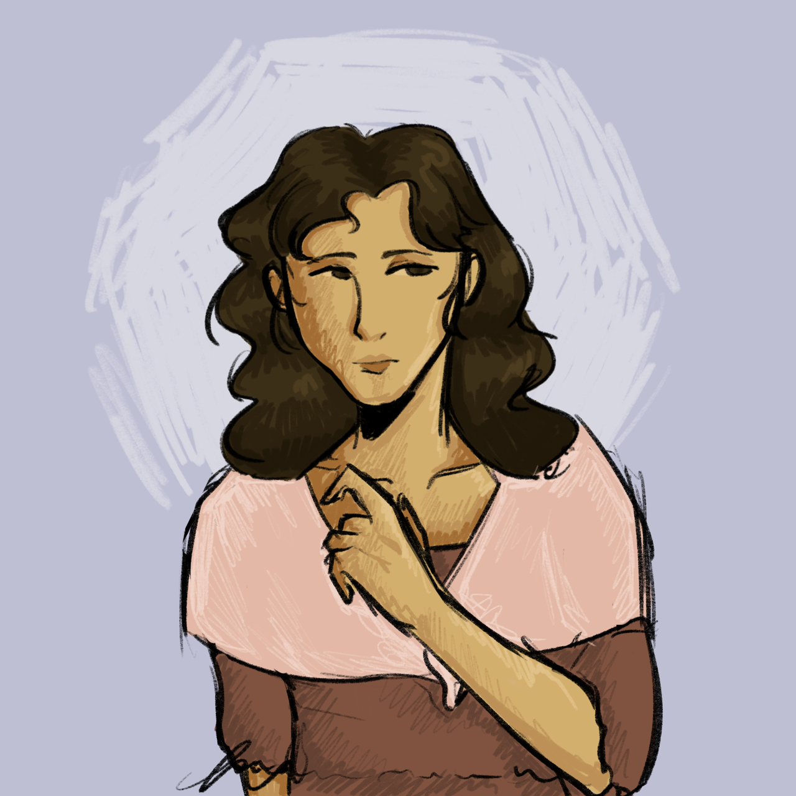
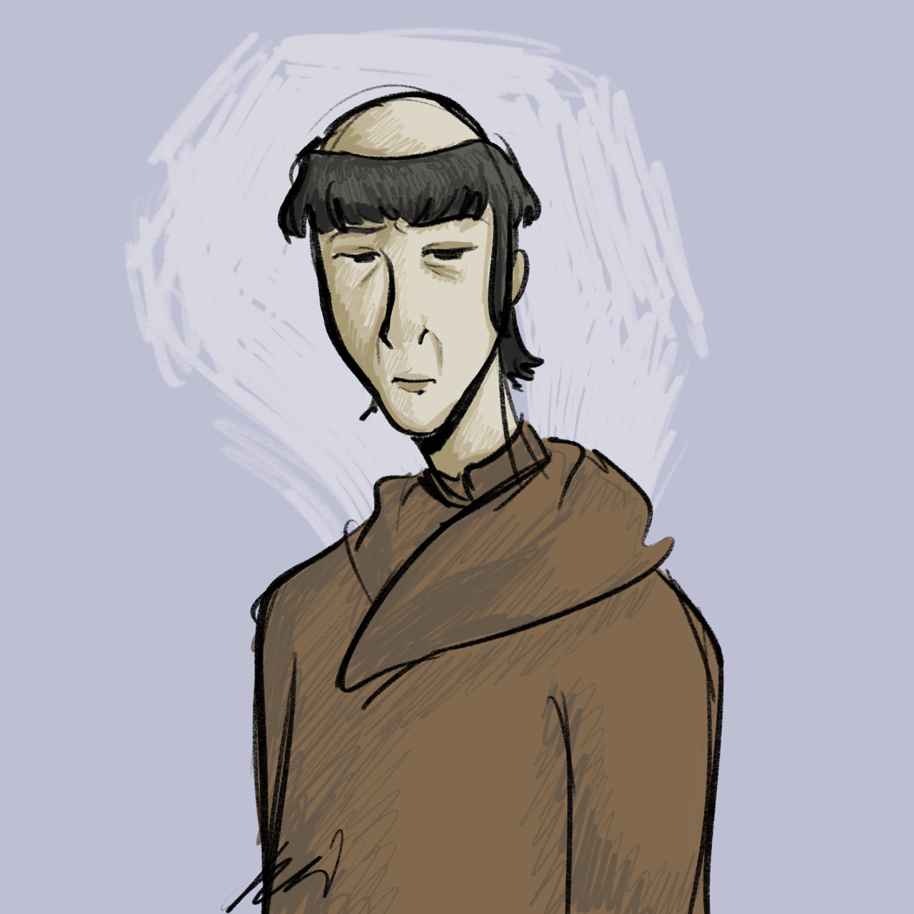

| Characters of Noli Me Tangere (in order of appearance) |
| Character Appearance |
Character Name |
Character Description |
|  |
Kapitan Tiago 1 |
- A Filipino business man as well as the gobernadorcillo of his Barangay
- A devout Catholic.
|
|  |
Padre Damaso 2 |
- A Spanish priest.
- A large, loud, short-tempered, proud man.
- He often hits church-goers as punishment if they do something wrong.
|
|  |
Juan Crisostomo Ibarra y Magsalin 3 |
- Commonly known with shorter name of Crisostomo Ibarra.
- He is a Spanish-Filipino Illustrado that was able to study in Spain for 7 years.
- A tall, courteous, smart, yet sometimes overly optimistic man.
|
|  |
Don Rafael Ibarra 4 |
- Crisostomo Ibarra's father.
- Dubbed a "Heretic" and "Filibuster", and was thrown into jail due to that.
|
|  |
Maria Clara 5 |
- Daughter of Kapitan Tiago, and childhood-friend-of/betrothed-to Crisostomo Ibarra.
- A polite, chaste woman.
- Studied for 7 years to become a nun.
|
|  |
Padre Salvi 6 |
- Another Spanish priest.
- A thin, sickly man.
- Imposes fines as punishment to wrongdoing church-goers.
|